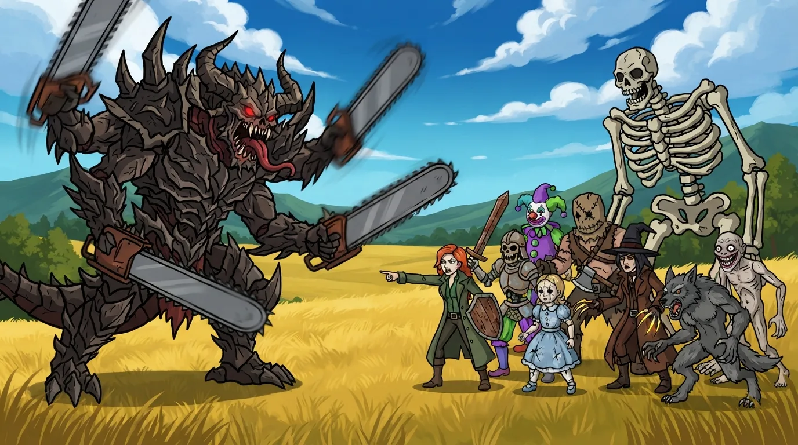

Bonecos articulados, golpes com motion blur e controle de velocidade em cada pose. Monte sua cena de ação, coloque som e exporte em MP4 direto para a galeria.
▶ Abrir o app no navegador Entre no grupo do TelegramArraste os pontos para posar. Personagens, veículos e objetos prontos para usar.
Na timeline, a largura de cada bloco é o tempo da pose. Ajuste vários quadros de uma vez para golpes rápidos e câmera lenta.
Desfoque de movimento nas transições rápidas, ideal para cenas de luta.
Faixa de áudio com forma de onda logo abaixo dos quadros: corte, apare e estique os blocos para encaixar falas e impactos.
Desenhe com pincel, borracha e balde em camadas, ou recorte partes de uma foto.
Abra pacotes de personagens com ossos, imagens e pontos de encaixe.
Trave a ponta de um osso e mova o corpo sem o pé escorregar.
Exporte para a galeria, WhatsApp ou CapCut, ou em PNG com fundo transparente.
Suas animações ficam guardadas no navegador deste aparelho. Entre na sua CONTA no app para salvar na nuvem, ou use BACKUP na tela inicial.
O app é gratuito, com anúncios que nunca aparecem enquanto você anima. Você pode assistir a um vídeo curto quando quiser liberar algo extra, como exportar em 1080p ou usar o motion blur. Quem preferir pode remover os anúncios com um pagamento único, sem assinatura.